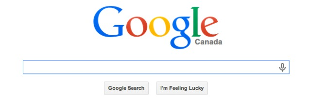
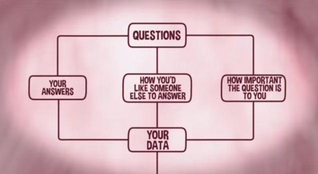
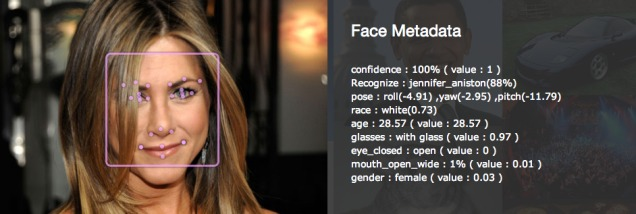

算法对于我们今天生活十分重要，怎样宣扬也不会夸张。它们在虚拟世界中无处不在，从金融机构到交友网站。但是，相比于其他算法，其中有一些算法更大程度上改变并控制着我们的世界——本文列举了其中十种最为重要的算法。
在正式介绍算法内容之前，让我们来迅速复习一些基本内容。虽然，没有明确的定义，但是计算机科学家将算法描述为一个定义了操作顺序的规则集合。它们是一组顺序指令，用来告诉计算机怎样解决一个问题或者达到某种既定目标。认识算法的好方法，是将算法可视化为流程图。
1. Google Search 谷歌搜索
不久之前，搜索引擎成为了互联网时代的霸主。与搜索引擎一起崛起的还有谷歌和谷歌提出的PageRank算法。

今天，在美国的核心搜索市场中，谷歌的市场占有率达到了66.7%，其次是微软（18.1%），雅虎（11.2%），Ask（2.6%），AOL（1.4%）。毋庸置疑，谷歌已经统治了搜索市场，而且我们中的很多人把谷歌作为使用互联网的主要途径。
PageRank 的工作依赖于两个组成部分，一是叫做"蜘蛛"或者"爬虫"的自动程序，另一部分是关键词索引及其 位置。这个算法通过计算某个网页的相关链接数量和链接质量，来大致计算这个网页的重要性。算法的基本思想是越重要的网页会有越多的链接指向它。这是一个基本的人气竞赛。除此之外，PageRank算法也考虑了一个网页中关键词的频率和出现位置，以及这个网页发布的时间。
2. Facebook News Feed
虽然我们不愿承认，但是Facebook的新闻提要（NewsFeed）是我们最喜欢浪费时间的地方。除非你的个人偏好已经设置为展示所有事件并且按照时间顺序更新所有好友新闻，不然你看到的新闻是一个预处理之后的选择，这个预处理是由Facebook的算法为你量身选择某些新闻而展示。

为了决定哪些新闻的内容是最有意思的，这个算法会考虑很多因素，比如评论数，发表人（是的，有一个内容的"流行"人物排名，所谓的"流行"人物是与你互动最多的人），发表类型（比如照片、视频、状态、更新等等）。
3. OKCupid 情侣匹配
在线交友现在是一个价值20亿美元的产业。由于Match.com, eHarmony, and OKCupid等网站的发展，这个产业自从2008年以来每年扩大3.5%。分析家认为这个产业的加速发展在未来五年还将继续——情有可原：这是情侣遇见的有效方式。婚恋网站不仅仅造就了更多的成功婚姻，他们也擅长于根据个人不同的喜好和倾向，匹配潜在情侣。当然，这样的匹配完全是由算法完成的。

我们将以OKCupid为例，OKCupid是一个免费的婚恋网站，联合创始人之一是哈佛大学的数学家Christian Rudder。OKCupid采用一种绝对的分析方法促成约会，他们从用户那里尽力获取信息。OKCupid 的配对算法不仅仅是简单地匹配一些共同爱好，同时，每一个问题都被赋予了权重，用来衡量这个问题对于用户和他们潜在情侣的重要程度。这就是所谓的差异造就不凡——这是OKCupid成为最高效婚恋网站的原因之一。
4. NSA 数据采集，解读和加密
我们越来越多地被算法而不是被人观察。感谢Edward Snowden，我们知道了美国安全局（NSA）及其小伙伴已经暗中监控了上百万的无辜公民。近期披露的文件显示，已经有许多的监控项目被FiveEyes实施，FiveEyes是由美国、澳大利亚、加拿大、新西兰和英国共同组成的情报组织。它们已经监控了我们的移动电话、电子邮箱、网络摄像头图像和地理位置信息。同时，"它们"我指的是他们的算法，这其中有太多的数据，人力无法进行收集和解读。

有意思的是，NSA声称实际上他们并没有"采集"我们的数据。根据一份1982年的程序手册，"信息"采集"是指当信息被收集并被国防部情报机构在职责范围内使用"。同时"数据由电子系统采集是指信息采集并被转换为可理解的形式"。英国卫报的Bruce Schneier解释道：
" 因此，假设你的朋友在家里有成千上万的书籍，根据NSA的解释，他并不"收集"图书。只有他真正在读的那些才是他"收集"的图书，他利用图书做其他事情时并不能认为他在"收集"图书。"
这会产生一个问题因为：
计算机算法与人们密切相关。当我们想到计算机算法正在监控我们并且分析我们的个人数据时，我们必须想想在算法背后的人。是不是有人正在看着我们的数据，事实上，他们能做的事情正是监视。
最后，最相关的还有美国国家安全局的Suite B 加密算法，这是一套功能强大的算法，用于加密、数据交换、数字签名和哈希。机构正是利用这一算法来保护分类以及未分类文件的。
5. 推荐算法
诸如比如 亚马逊和 Netflix 这样的网站，会记录你购买过的书籍或是你看过的电影，然后根据我们的爱好为我们推荐商品。

正如许多自动程序一样，这种二十一世纪独有的技术既有优点也有缺点。虽然这样的推荐有时候很有帮助，但是有时候也会偏离目标——特别是你为你的三岁女儿选购了一本儿童读物作为礼物之后。
与PageRank和Facebook的新闻提要一样，这样的算法正在造成所谓的"过滤器泡沫"，这是一种现象，用户与他们不感兴趣的信息隔离——有效地将用户通过意识形态的"泡沫"隔离起来。这导致了Eli Pariser提出的"信息决定论"，我们过去在网上浏览的兴趣决定了我们的未来。
6. Google AdWords
与之前的算法类似， Google, Facebook以及其他的网站跟踪你的行为、用词、搜索请求来推送相应广告。 Google's AdWords——公司最主要的收入来源——正是以这样的模式进行预测的，同时Facebook也在尽力进行相关研究（你最后一次点击Facebook的广告是什么时候？）
7. 高频率的股票交易

很久之前，金融部门就开始使用算法来预测市场波动，但是他们在高频率的股票交易中的实践才刚刚开始。这样的高速交易涉及的算法，也叫做机器人，可以对订单在毫秒级做出判断。相反，一个人通常需要至少一秒才能对潜在的风险做出反应。因此，人们逐渐被排除在了实际交易的循环之外——一个全新的电子生态正在逐渐形成。
但是，又是这些算法会造成错误。Leo Hickman解释道：
比如：2010年五月六日的"闪电崩盘"，当时道琼斯指数在几分钟内平均下跌了1000点，而在二十分钟之后市场才出现反弹。这样的大幅直线下跌到目前为止也没能得到完整解释，但是大部分经济学家将齐归咎于"竟次"。"竟次"的罪魁祸首是为了达到高频交易而大规模使用的量化交易算法。Scott Patterson，华尔街日报的记着和《The Quants》的作者，将在交易场地使用这些算法比作飞机的自动驾驶。今天，大部分的交易是由算法自动完成的，但是当情况出现不同时，比如发生闪电崩盘时，应当有人工介入。
8. MP3 压缩
压缩数据算法是电子世界不可磨灭的重要一员。我们希望更快地接收媒体数据，同时希望节约硬盘空间。因此，人们设计了很多方法来压缩和传送数据。

比如，在1991年思科系统研发了CRTP协议。1987年，德国研究者发明了今天广泛使用的MP3格式，从而将音频的大小减少到原始大小的十分之一。这一压缩格式导致了音乐产业的革命（影响有好有坏）。
9. 预测分析软件
目前这一技术并没有主宰我们的世界，但是它将很快主宰世界。越来越多的警察机构正在使用一种预测分析技术——一种让人想起电影《少数派报告》的新工具。
在2010年，据说利用IBM的预测分析软件（叫做CRUSH，全称 Criminal Reduction Utilizing Statistical History），2006年以来孟菲斯市的警察局减少了超过30%的恶性案件，其中包括减少了15%的暴力犯罪。同时，在波兰、以色列以及英国的城市也在关注这一技术。现在，洛杉矶、圣克鲁斯、查尔斯顿等也开始了试点。

这一技术结合了数据采集、统计分析，当然还有前沿的算法。它使得警察可以评估城市的犯罪特点，并且预告可能的犯罪"热点"，从而"积极地配置资源和分配人手，从而提高人力物力的使用效率，提高公众安全"。
未来，这个系统可能会大规模替代分析家的工作。犯罪行为可以被精确的算法所追踪，这些算法监控了互联网行为、GPS，个人电子设备，生物特征和其他现实中的通信方式。越来越多的无人机会用来追踪潜在罪犯，通过分析他们的肢体动作和其他的可视化线索，来预测他们的意图。
10. 调音（Auto-Tune）
最后，仅供娱乐，现在调音器由算法完成。无论是歌声或是乐器的声音，这些设备都能通过一组特定规则，略微修改音高，让音高达到最接近的准确半音上。有趣的是，这种技术最初由Exxon's Any Hildebrand 用于处理地震数据。
美国女歌手Cher的《Believe》，被认为是第一首使用调音的流行歌曲。